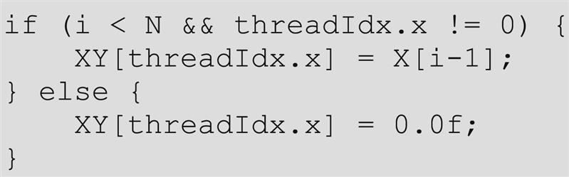
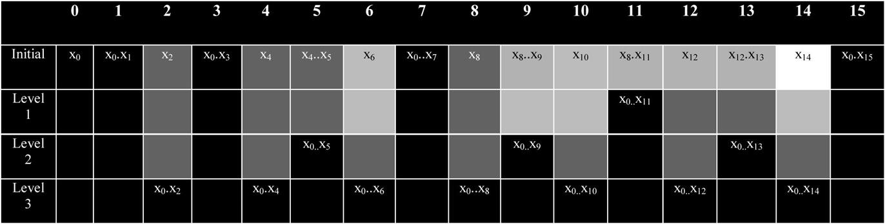
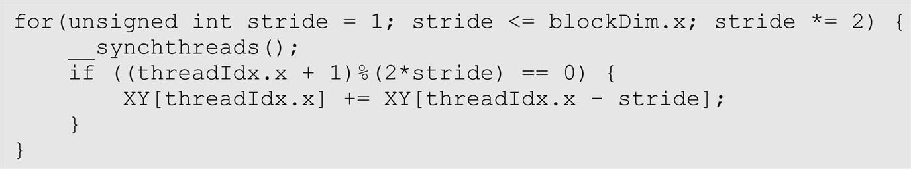
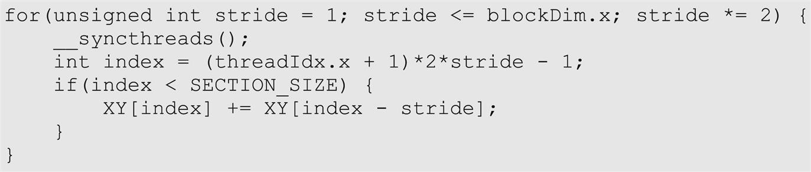
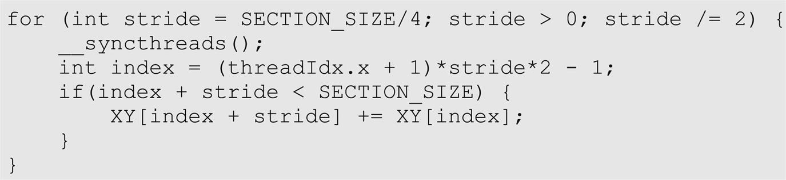
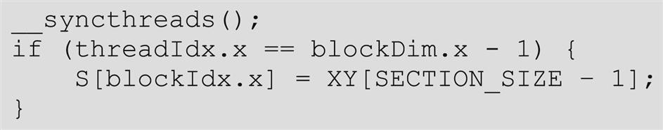
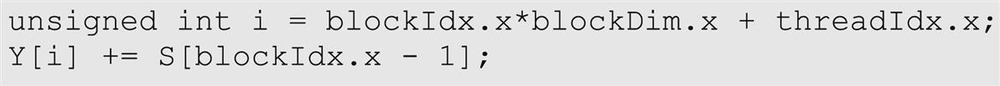
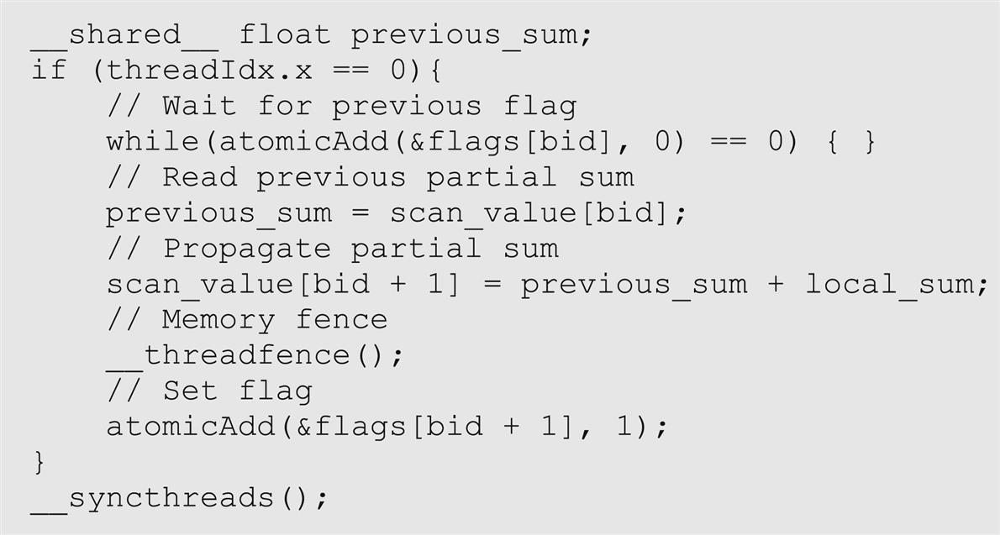
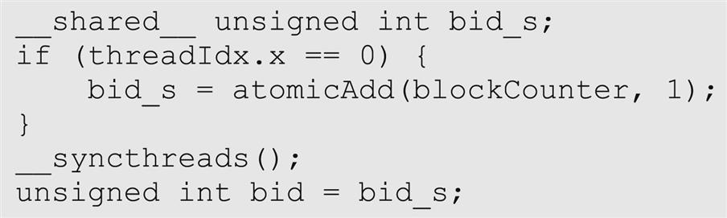

With special contributions from Li-Wen Chang, Juan Gómez-Luna and John Owens
This chapter introduces parallel scan (prefix sum), an important parallel computation pattern and the concept of work efficiency for parallel algorithms. It introduces three styles of kernels: Kogge-Stone, Brent-Kung, and two-phase hybrid. These kernels each present a different tradeoff in terms of work efficiency, speed, and complexity. The chapter then introduces two hierarchical parallel scan algorithms that are designed to process arbitrarily long input lists while maintaining work efficiency.
Scan; prefix sum; reduction; linear recursion; resource allocation; work assignment; polynomial evaluation; Kogge-Stone; race condition; data dependence; double-buffering; work efficiency; Brent-Kung; segmented scan; adjacent (block) synchronization; stream-based scan
Our next parallel pattern is prefix sum, which is also commonly known as scan. Parallel scan is frequently used to parallelize seemingly sequential operations, such as resource allocation, work assignment, and polynomial evaluation. In general, if a computation is naturally described as a mathematical recursion in which each item in a series is defined in terms of the previous item, it can likely be parallelized as a parallel scan operation. Parallel scan plays a key role in massively parallel computing for a simple reason: Any sequential section of an application can drastically limit the overall performance of the application. Many such sequential sections can be converted into parallel computation with parallel scan. For this reason, parallel scan is often used as a primitive operation in parallel algorithms that perform radix sort, quick sort, string comparison, polynomial evaluation, solving recurrences, tree operations, and stream compaction. The radix sort example will be presented in Chapter 13, Sorting.
Another reason why parallel scan is an important parallel pattern is that it is a typical example of where the work performed by some parallel algorithms can have higher complexity than the work performed by a sequential algorithm, leading to a tradeoff that needs to be carefully made between algorithm complexity and parallelization. As we will show, a slight increase in algorithm complexity can make parallel scan run more slowly than sequential scan for large datasets. Such consideration is becoming even more important in the age of “big data,” in which massive datasets challenge tradition algorithms that have high computational complexity.
Mathematically, an inclusive scan operation takes a binary associative operator ⊕ and an input array of n elements [x0, x1, …, xn−1], and returns the following output array:
For example, if ⊕ is addition, an inclusive scan operation on the input array [3 1 7 0 4 1 6 3] would return [2, 3+1, 3+1+7, 3+1+7+0, …, 3+1+7+0+4+1+6+3]=[3 4 11 11 15 16 22 25]. The name “inclusive” scan comes from the fact that each output element includes the effect of the corresponding input element.
We can illustrate the applications for inclusive scan operations using an example of cutting sausage for a group of people. Assume that we have a 40-inch sausage to be served to eight people. Each person has ordered a different amount in terms of inches: 3, 1, 7, 0, 4, 1, 6, and 3. That is, Person 0 wants 3 inches of sausage, Person 1 wants 1 inch, and so on. We can cut the sausage either sequentially or in parallel. The sequential way is very straightforward. We first cut a 3-inch section for Person 0. The sausage is now 37 inches long. We then cut a one-inch section for Person 1. The sausage becomes 36 inches long. We can continue to cut more sections until we serve the 3-inch section to Person 7. At that point, we have served a total of 25 inches of sausage, with 15 inches remaining.
With an inclusive scan operation, we can calculate the locations of all the cutting points based on the amount ordered by each person. That is, given an addition operation and an order input array [3 1 7 0 4 1 6 3], the inclusive scan operation returns [3 4 11 11 15 16 22 25]. The numbers in the return array are the cutting locations. With this information, one can simultaneously make all the eight cuts that will generate the sections that each person ordered. The first cut point is at the 3-inch location, so the first section will be 3 inches, as ordered by Person 0. The second cut point is at the 4-inch location; therefore the second section will be 1-inch long, as ordered by Person 1. The final cut point will be at the 25-inch location, which will produce a 3-inch-long section, since the previous cut point is at the 22-inch point. This gives Person 7 what she ordered. Note that since all the cut points are known from the scan operation, all cuts can be done in parallel or in any arbitrary sequence.
In summary, an intuitive way of thinking about inclusive scan is that the operation takes a request from a group of people and identifies all the cut points that allow the orders to be served all at once. The order could be for sausage, bread, campground space, or a contiguous chunk of memory in a computer. As long as we can quickly calculate all the cut points, all orders can be served in parallel.
An exclusive scan operation is similar to an inclusive scan operation with a slightly different arrangement of the output array:
That is, each output element excludes the effect of the corresponding input element. The first output element is i, the identity value for operator ⊕, while the last output element only reflects the contribution of up to xn−2. An identity value for a binary operator is defined as a value that, when used as an input operand, causes the operation to generate an output value that is the same as the other input operand’s value. In the case of the addition operator, the identity value is 0, as any number added with zero will result in itself.
The applications of an exclusive scan operation are pretty much the same as those for inclusive scan. The inclusive scan provides slightly different information. In the sausage example, an exclusive scan would return [0 3 4 11 11 15 16 22], which are the beginning points of the cut sections. For example, the section for Person 0 starts at the 0-inch point. For another example, the section for Person 7 starts at the 22-inch point. The beginning point information is important in applications such as memory allocation, in which the allocated memory is returned to the requester via a pointer to its beginning point.
Note that it is easy to convert between the inclusive scan output and the exclusive scan output. One simply needs to shift all elements and fill in an element. When converting from inclusive to exclusive, one can simply shift all elements to the right and fill in identity value for the 0th element. When converting from exclusive to inclusive, one needs to shift all elements to the left and fill in the last element with the previous last element ⊕ the last input element. It is just a matter of convenience that we can directly generate an inclusive or exclusive scan depending on whether we care about the cut points or the beginning points for the sections. Therefore we will present parallel algorithms and implementations only for inclusive scan.
Before we present parallel scan algorithms and their implementations, we would like to show a sequential inclusive scan algorithm and its implementation. We will assume that the operator involved is addition. The code in Fig. 11.1 assumes that the input elements are in the x array and the output elements are to be written into the y array.
The code initializes the output element y[0] with the value of input element x[0] (line 02). In each iteration of the loop (lines 03–05), the loop body adds one more input element to the previous output element (which stores the accumulation of all the previous input elements) to generate one more output element.
It should be clear that the work done by the sequential implementation of inclusive scan in Fig. 11.1 is linearly proportional to the number of input elements; that is, the computational complexity of the sequential algorithm is .
In Sections 11.2–11.5, we will present alternative algorithms for performing parallel segmented scan, in which every thread block will perform a scan on a segment, that is, a section, of elements in the input array in parallel. We will then present in Sections 11.6 and 11.7 methods that combine the segmented scan results into the scan output for the entire input array.
We start with a simple parallel inclusive scan algorithm by performing a reduction operation for each output element. One might be tempted to use each thread to perform sequential reduction as shown in Fig. 10.2 for one output element. After all, this allows the calculations for all output elements to be performed in parallel. Unfortunately, this approach will be unlikely to improve the execution time over the sequential scan code in Fig. 11.1. This is because the calculation of yn−1 will take n steps, the same number of steps taken by the sequential scan code, and each step (iteration) in the reduction involves the same amount of work as each iteration of the sequential scan. Since the completion time of a parallel program is limited by the thread that takes the longest time, this approach is unlikely be any faster than sequential scan. In fact, with limited computing resources, the execution time of this naïve parallel scan algorithm can be much longer than that of the sequential algorithm. The computation cost, or the total number of operations performed, would unfortunately be much higher for the proposed approach. Since the number of reduction steps for output element i would be i, the total number of steps performed by all threads would be
That is, the proposed approach has a computation complexity of O(N2), which is higher than the complexity of the sequential scan, which is O(N), while offering no speedup. The higher computational complexity means that considerably more execution resources need to be provisioned. This is obviously a bad idea.
A better approach is to adapt the parallel reduction tree in Chapter 10, Reduction and Minimizing Divergence, to calculate each output element with a reduction tree of the relevant input elements. There are multiple ways to design the reduction tree for each output element. Since the reduction tree for element i involves i add operations, this approach would still increase the computational complexity to O(N2) unless we find a way to share the partial sums across the reduction trees of different output elements. We present such a sharing approach that is based on the Kogge-Stone algorithm, which was originally invented for designing fast adder circuits in the 1970s (Kogge & Stone, 1973). This algorithm is still being used in the design of high-speed computer arithmetic hardware.
The algorithm, illustrated in Fig. 11.2, is an in-place scan algorithm that operates on an array XY that originally contains input elements. It iteratively evolves the contents of the array into output elements. Before the algorithm begins, we assume that XY[i] contains input element xi. After k iterations, XY[i] will contain the sum of up to 2k input elements at and before the location. For example, after one iteration, XY[i] will contain xi−1+xi and at the end of iteration 2, XY[i] will contain xi−3+xi−2+xi−1+xi, and so on.
Fig. 11.2 illustrates the algorithm with a 16-element input example. Each vertical line represents an element of the XY array, with XY[0] in the leftmost position. The vertical direction shows the progress of iterations, starting from the top of the figure. For inclusive scan, by definition, y0 is x0, so XY[0] contains its final answer. In the first iteration, each position other than XY[0] receives the sum of its current content and that of its left neighbor. This is illustrated by the first row of addition operators in Fig. 11.2. As a result, XY[i] contains xi−1+xi. This is reflected in the labeling boxes under the first row of addition operators in Fig. 11.2. For example, after the first iteration, XY[3] contains x2+x3, shown as ∑x2…x3. Note that after the first iteration, XY[1] is equal to x0+x1, which is the final answer for this position. So, there should be no further changes to XY[1] in subsequent iterations.
In the second iteration, each position other than XY[0] and XY[1] receives the sum of its current content and that of the position that is two elements away. This is illustrated in the labeled boxes below the second row of addition operators. As a result, XY[i] becomes xi−3+xi-2+xi-1+xi. For example, after the second iteration, XY[3] becomes x0+x1+x2+x3, shown as ∑x0…x3. Note that after the second iteration, XY[2] and XY[3] have reached their final answers and will not need to be changed in subsequent iterations. The reader is encouraged to work through the rest of the iterations.
Fig. 11.3 shows the parallel implementation of the algorithm illustrated in Fig. 11.2. We implement a kernel that performs local scans on different segments (sections) of the input that are each small enough for a single block to handle. Later, we will make final adjustments to consolidate these sectional scan results for large input arrays. The size of a section is defined as a compile-time constant SECTION_SIZE. We assume that the kernel function will be called using SECTION_SIZE as the block size, so there will be the same number of threads and section elements. We assign each thread to evolve the contents of one XY element.
The implementation shown in Fig. 11.3 assumes that input values were originally in a global memory array X, whose address is passed into the kernel as an argument (line 01). We will have all the threads in the block collaboratively load the X array elements into a shared memory array XY (line 02). This is done by having each thread calculate its global data index i=blockIdx.x*blockDim.x+threadIdx.x (line 03) for the output vector element position it is responsible for. Each thread loads the input element at that position into the shared memory at the beginning of the kernel (lines 04–08). At the end of the kernel, each thread will write its result into the assigned output array Y (lines 18–20).
We now focus on the implementation of the iterative calculations for each XY element in Fig. 11.3 as a for-loop (lines 09–17). The loop iterates through the reduction tree for the XY array position that is assigned to a thread. When the stride value becomes greater than a thread’s threadIdx.x value, it means that the thread’s assigned XY position has already accumulated all the required input values and the thread no longer needs to be active (lines 12 and 15). Note that we use a barrier synchronization (line 10) to make sure that all threads have finished their previous iteration before any of them starts the next iteration. This is the same use of __syncthreads() as in the reduction discussion in Chapter 10, Reduction and Minimizing Divergence.
There is, however, a very important difference compared to reduction in updating of the XY elements (lines 12–16) in each iteration of the for-loop. Note that each active thread first stores the partial sum for its position into a temp variable (in a register). After all threads have completed a second barrier synchronization (line 14), all of them store their partial sum values to their XY positions (line 16). The need for the extra temp and __syncthreads() has to do with a write-after-read data dependence hazard in these updates. Each active thread adds the XY value at its own position (XY[threadIdx.x]) and that at a position of another thread (XY[threadIdx.x-stride]). If a thread i writes to its output position before another thread i+stride has had the chance to read the old value at that position, the new value can corrupt the addition performed by the other thread. The corruption may or may not occur, depending on the execution timing of the threads involved, which is referred to as a race condition. Note that this race condition is different from the one we saw in Chapter 9, Parallel Histogram, with the histogram pattern. The race condition in Chapter 9, Parallel Histogram, was a read-modify-write race condition that can be solved with atomic operations. For the write-after-read race condition that we see here, a different solution is required.
The race condition can be easily observed in Fig. 11.2. Let us examine the activities of thread 4 (x4) and thread 6 (x6) during iteration 2, which is represented as the addition operations in the second row from the top. Note that thread 6 needs to add the old value of XY[4] (x3+x4) to the old value XY[6] (x5+x6) to generate the new value of XY[6] (x3+x4+x5+x6). However, if thread 4 stores its addition result for the iteration (x1+x2+x3+x4) into XY[4] too early, thread 6 could end up using the new value as its input and store (x1+x2+x3+x4+x5+x6) into XY[6]. Since x1+x2 will be added again to XY[6] by thread 6 in the third iteration, the final answer in XY[6] will become (2x1+2x2+x3+x4+x5+x6), which is obviously incorrect. On the other hand, if thread 6 happens to read the old value in XY[4] before thread 4 overwrites it during iteration 2, the results will be correct. That is, the execution result of the code may or may not be correct, depending on the timing of thread execution, and the execution results can vary from run to run. Such lack of reproducibility can make debugging a nightmare.
The race condition is overcome with the temporary variable used in line 13 and the __syncthreads( ) barrier in line 14. In line 13, all active threads first perform addition and write into their private temp variables. Therefore none of the old values in XY locations will be overwritten. The barrier __syncthread( ) in line 14 ensures that all active threads have completed their read of the old XY values before any of them can move forward and perform a write. Thus it is safe for the statement in line 16 to overwrite the XY locations.
The reason why an updated XY position may be used by another active thread is that the Kogge-Stone approach reuses the partial sums across reduction trees to reduce the computational complexity. We will study this point further in Section 11.3. The reader might wonder why the reduction tree kernels in Chapter 10, Reduction and Minimizing Divergence, did not need to use temporary variables and an extra __syncthreads(). The answer is that there is no race condition caused by a write-after-read hazard in these reduction kernels. This is because the elements written to by the active threads in an iteration are not read by any of the other active threads during the same iteration. This should be apparent by inspecting Fig. 10.7 and 10.8. For example, in Fig. 10.8, each active thread takes its inputs from its own position (input[threadIdx.x]) and a position that is of stride distance to the right (input[threadIdx.x+stride]). None of the stride distance positions are updated by any active threads during any given iteration. Therefore all active threads will always be able to read the old value of their respective input[threadIdx.x]. Since the execution within a thread is always sequential, each thread will always be able to read the old value in input[threadIdx.x] before writing the new value into the position. The reader should verify that the same property holds in Fig. 10.7.
If we want to avoid having a second barrier synchronization on every iteration, another way to overcome the race condition is to use separate arrays for input and output. If separate arrays are used, the location that is being written to is different from the location that is being read from, so there is no longer any potential write-after-read race condition. This approach would require having two shared memory buffers instead of one. In the beginning, we load from the global memory to the first buffer. In the first iteration we read from the first buffer and write to the second buffer. After the iteration is over, the second buffer has the most up-to-date results, and the results in the first buffer are no longer needed. Hence in the second iteration we read from the second buffer and write to the first buffer. Following the same reasoning, in the third iteration we read from the first buffer and write to the second buffer. We continue alternating input/output buffers until the iterations complete. This optimization is called double-buffering. Double-buffering is commonly used in parallel programming as a way to overcome write-after-read race conditions. We leave the implementation of this optimization as an exercise for the reader.
Furthermore, as is shown in Fig. 11.2, the actions on the smaller positions of XY end earlier than those on the larger positions (see the if-statement condition). This will cause some level of control divergence in the first warp when stride values are small. Note that adjacent threads will tend to execute the same number of iterations. The effect of divergence should be quite modest for large block sizes, since divergence will arise only in the first warp. The detailed analysis is left as an exercise for the reader.
Although we have shown only an inclusive scan kernel, we can easily convert an inclusive scan kernel to an exclusive scan kernel. Recall that an exclusive scan is equivalent to an inclusive scan with all elements shifted to the right by one position and element 0 filled with the identity value. This is illustrated in Fig. 11.4. Note that the only real difference is the alignment of elements on top of the picture. All labeling boxes are updated to reflect the new alignment. All iterative operations remain the same.
We can now easily convert the kernel in Fig. 11.3 into an exclusive scan kernel. The only modification we need to make is to load 0 into XY[0] and X[i-1] into XY[threadIdx.x], as shown in the following code:

By substituting these four lines of code for lines 04–08 of Fig. 11.3, we convert the inclusive scan kernel into an exclusive scan kernel. We leave the work to finish the exclusive scan kernel as an exercise for the reader.
One important consideration in analyzing parallel algorithms is work efficiency. The work efficiency of an algorithm refers to the extent to which the work that is performed by the algorithm is close to the minimum amount of work needed for the computation. For example, the minimum number of additions required by the scan operation is N−1 additions, or O(N), which is the number of additions that the sequential algorithm performs. However, as we saw in the beginning of Section 11.2, the naïve parallel algorithm performs N*(N−1)/2 additions, or O(N2), which is substantially larger than the sequential algorithm. For this reason, the naïve parallel algorithm is not work efficient.
We now analyze the work efficiency of the Kogge-Stone kernel in Fig. 11.3, focusing on the work of a single thread block. All threads iterate up to log2N steps, where N is the SECTION_SIZE. In each iteration the number of inactive threads is equal to the stride size. Therefore we can calculate the amount of work done (one iteration of the for-loop, represented by the add operation in Fig. 8.1) for the algorithm as
The first part of each term is independent of stride, and its summation adds up to N*log2 (N). The second part is a familiar geometric series and sums up to (N−1). So, the total amount of work done is
The good news is that the computational complexity of the Kogge-Stone approach is O(N*log2(N)), better than the O(N2) complexity of a naïve approach that performs complete reduction trees for all output elements. The bad news is that the Kogge-Stone algorithm is still not as work efficient as the sequential algorithm. Even for modest-sized sections, the kernel in Fig. 11.3 does much more work than the sequential algorithm. In the case of 512 elements, the kernel does approximately eight times more work than the sequential code. The ratio will increase as N becomes larger.
Although the Kogge-Stone algorithm performs more computations than the sequential algorithm, it does so in fewer steps because of parallel execution. The for-loop of the sequential code executes N iterations. As for the kernel code, the for-loop of each thread executes up to log2N iterations, which defines the minimal number of steps needed for executing the kernel. With unlimited execution resources, the reduction in the number of steps of the kernel code over the sequential code would be approximately N/log2(N). For N=512, the reduction in the number of steps would be about 512/9=56.9×.
In a real CUDA GPU device, the amount of work done by the Kogge-Stone kernel is more than the theoretical N*log2(N)−(N−1). This is because we are using N threads. While many of the threads stop participating in the execution of the for-loop, some of them still consume execution resources until the entire warp completes execution. Realistically, the amount of execution resources consumed by the Kogge-Stone is closer to N*log2(N).
We will use the concept of computation steps as an approximate indicator for comparing between scan algorithms. The sequential scan should take approximately N steps to process N input elements. For example, the sequential scan should take approximately 1024 steps to process 1024 input elements. With P execution units in the CUDA device, we can expect the Kogge-Stone kernel to execute for (N*log2(N))/P steps. If P is equal to N, that is, if we have enough execution units to process all input element in parallel, then we need log2(N) steps, as we saw earlier. However, P could be smaller than N. For example, if we use 1024 threads and 32 execution units to process 1024 input elements, the kernel will likely take (1024*10)/32=320 steps. In this case, we expect to achieve a 1024/320=3.2×reduction in the number of steps.
The additional work done by the Kogge-Stone kernel over the sequential code is problematic in two ways. First, the use of hardware for executing the parallel kernel is much less efficient. If the hardware does not have enough resources (i.e., if P is small), the parallel algorithm could end up needing more steps than the sequential algorithm. Hence the parallel algorithm will be slower. Second, all the extra work consumes additional energy. This makes the kernel less appropriate for power-constrained environments such as mobile applications.
The strength of the Kogge-Stone kernel is that it can achieve very good execution speed when there is enough hardware resources. It is typically used to calculate the scan result for a section with a modest number of elements, such as 512 or 1024. This, of course, assumes that GPUs can provide sufficient hardware resources and use the additional parallelism to tolerate latencies. As we have seen, its execution has a very limited amount of control divergence. In newer GPU architecture generations its computation can be efficiently performed with shuffle instructions within warps. We will see later in this chapter that it is an important component of the modern high-speed parallel scan algorithms.
While the Kogge-Stone kernel in Fig. 11.3 is conceptually simple, its work efficiency is quite low for some practical applications. Just by inspecting Figs. 11.2 and 11.4, we can see that there are potential opportunities for further sharing of some intermediate results. However, to allow more sharing across multiple threads, we need to strategically calculate the intermediate results and distribute them to different threads, which may require additional computation steps.
As we know, the fastest parallel way to produce sum values for a set of values is a reduction tree. With sufficient execution units, a reduction tree can generate the sum for N values in log2(N) time units. The tree can also generate several sub-sums that can be used in the calculation of some of the scan output values. This observation was used as a basis for the Kogge-Stone adder design and also forms the basis of the Brent-Kung adder design (Brent & Kung, 1979). The Brent-Kung adder design can also be used to implement a parallel scan algorithm with better work efficiency.
Fig. 11.5 illustrates the steps for a parallel inclusive scan algorithm based on the Brent-Kung adder design. In the top half of Fig. 11.5, we produce the sum of all 16 elements in four steps. We use the minimal number of operations needed to generate the sum. During the first step, only the odd element of XY[i] will be updated to XY[i-1]+XY[i]. During the second step, only the XY elements whose indices are of the form of 4*n−1, which are 3, 7, 11, and 15 in Fig. 11.5, will be updated. During the third step, only the XY elements whose indices are of the form 8*n−1, which are 7 and 15, will be updated. Finally, during the fourth step, only XY[15] is updated. The total number of operations performed is 8+4+2+1=15. In general, for a scan section of N elements, we would do (N/2)+(N/4)+…+2+1=N−1 operations for this reduction phase.
The second part of the algorithm is to use a reverse tree to distribute the partial sums to the positions that can use them to complete the result of those positions. The distribution of partial sums is illustrated in the bottom half of Fig. 11.5. To understand the design of the reverse tree, we should first analyze the needs for additional values to complete the scan output at each position of XY. It should be apparent from an inspection of Fig. 11.5 that the additions in the reduction tree always accumulate input elements in a continuous range. Therefore we know that the values that have been accumulated into each position of XY can always be expressed as a range of input elements xi…xj, where xi is the starting position and xj is the ending position (inclusive).
Fig. 11.6 shows the state of each position (column), including both the values already accumulated into the position and the need for additional input element values at each level (row) of the reverse tree. The state of each position initially and after each level of additions in the reverse tree is expressed as the input elements, in the form xi…xj, that have already been accounted for in the position. For example, x8…x11 in row Initial and column 11 indicates that the values of x8, x9, x10, and x11 have been accumulated into XY[11] before the reverse tree begins (right after the reduction phase shown in the bottom portion of Fig. 11.5). At the end of the reduction tree phase, we have quite a few positions that are complete with the final scan values. In our example, XY[0], XY[1], XY[3], XY[7], and XY[15] are all complete with their final answers.

The need for additional input element values is indicated by the shade of each cell in Fig. 11.6: White means that the position needs to accumulate partial sums from three other positions, light gray means 2, dark gray means 1, and black means 0. For example, initially, XY[14] is marked white because it has only the value of x14 at the end of the reduction tree phase and needs to accumulate the partial sums from XY[7] (x0…x7), XY[11] (x8…x11), and XY[13] (x12…x13) to complete its final scan value (x0…x14). The reader should verify that because of the structure of the reduction tree, the XY positions for an input of size N elements will never need the accumulation from more than log2(N)−1 partial sums from other XY positions. Furthermore, these partial sum positions will always be 1, 2, 4, … (powers of 2) away from each other. In our example, XY[14] needs log2(16)−1=3 partial sums from positions that are 1 (between XY[14] and XY[13]), 2 (between XY[13] and XY[11]), and 4 (between XY[11] and XY[7]).
To organize our second half of the addition operations, we will first show all the operations that need partial sums from four positions away, then two positions away, then one position away. During the first level of the reverse tree, we add XY[7] to XY[11], which brings XY[11] to the final answer. In Fig. 11.6, position 11 is the only one that advances to its final answer. During the second level, we complete XY[5], XY[9], and XY[13], which can be completed with the partial sums that are two positions away: XY[3], XY[7], and XY[11], respectively. Finally, during the third level, we complete all even positions XY[2], XY[4], XY[6], XY[8], XY[10], and XY[12] by accumulating the partial sums that are one position away (immediate left neighbor of each position).
We are now ready to implement the Brent-Kung approach to scan. We could implement the reduction tree phase of the parallel scan using the following loop:

Note that this loop is similar to the reduction in Fig. 10.6. There are only two differences. The first difference is that we accumulate the sum value toward the highest position, which is XY[blockDim.x-1], rather than XY[0]. This is because the final result of the highest position is the total sum. For this reason, each active thread reaches for a partial sum to its left by subtracting the stride value from its index. The second difference is that we want the active threads to have a thread index of the form 2n−1 rather than 2n. This is why we add 1 to the threadIdx.x before the modulo (%) operation when we select the threads for performing addition in each iteration.
One drawback of this style of reduction is that it has significant control divergence problems. As we saw in Chapter 10, Reduction and Minimizing Divergence, a better way is to use a decreasing number of contiguous threads to perform the additions as the loop advances. Unfortunately, the technique we used to reduce divergence in Fig. 10.8 cannot be used in the scan reduction tree phase, since it does not generate the needed partial sum values in the intermediate XY positions. Therefore we resort to a more sophisticated thread index to data index mapping that maps a continuous section of threads to a series of data positions that are of stride distance apart. The following code does so by mapping a continuous section of threads to the XY positions whose indices are of the form k*2n−1:

By using such a complex index calculation in each iteration of the for-loop, a contiguous set of threads starting from thread 0 will be used in every iteration to avoid control divergence within warps. In our small example in Fig. 11.5, there are 16 threads in the block. In the first iteration, stride is equal to 1. The first eight consecutive threads in the block will satisfy the if-condition. The XY index values calculated for these threads will be 1, 3, 5, 7, 9, 11, 13, and 15. These threads will perform the first row of additions in Fig. 11.5. In the second iteration, stride is equal to 2. Only the first four threads in the block will satisfy the if-condition. The index values calculated for these threads will be 3, 7, 11, and 15. These threads will perform the second row of additions in Fig. 11.5. Note that since each iteration will always be using consecutive threads, the control divergence problem does not arise until the number of active threads drops below the warp size.
The reverse tree is a little more complex to implement. We see that the stride value decreases from SECTION_SIZE/4 to 1. In each iteration we need to “push” the value of XY elements from positions that are multiples of twice the stride value minus 1 to the right by stride positions. For example, in Fig. 11.5 the stride value decreases from 4 (22) down to 1. In the first iteration we would like to push (add) the value of XY[7] into XY[11], where 7 is 2*22−1 and distance (stride) is 22. Note that only thread 0 will be used for this iteration, since the index calculated for other threads will be too large to satisfy the if-condition. In the second iteration we push the values of XY[3], XY[7], and XY[11] to XY[5], XY[9], and XY[13], respectively. The indices 3, 7, and 11 are 1*2*21−1, 2*2*21−1, and 3*2*21−1, respectively. The destination positions are 21 positions away from the source positions. Finally, in the third iteration we push the values at all the odd positions to their even position right-hand neighbor (stride=2°).
On the basis of the discussions above, the reverse tree can be implemented with the following loop:

The calculation of index is similar to that in the reduction tree phase. The XY[index+stride] +=XY[index] statement reflects the push from the threads’ mapped location into a higher position that is stride away.
The final kernel code for a Brent-Kung parallel scan is shown in Fig. 11.7. The reader should notice that we never need to have more than SECTION_SIZE/2 threads for either the reduction phase or the distribution phase. Therefore we could simply launch a kernel with SECTION_SIZE/2 threads in a block. Since we can have up to 1024 threads in a block, each scan section can have up to 2048 elements. However, we will need to have each thread load two X elements at the beginning and store two Y elements at the end.
As was in the case of the Kogge-Stone scan kernel, one can easily adapt the Brent-Kung inclusive parallel scan kernel into an exclusive scan kernel with a minor adjustment to the statement that loads X elements into XY. Interested readers should also read Harris et al., 2007, for an interesting natively exclusive scan kernel that is based on a different way of designing the reverse tree phase of the scan kernel.
We now turn our attention to the analysis of the number of operations in the reverse tree stage. The number of operations is (16/8)−1+(16/4)−1+(16/2)−1. In general, for N input elements the total number of operations would be (2−1)+(4−1)+…+(N/4−1)+(N/2−1), which is N−1−log2(N). Therefore the total number of operations in the parallel scan, including both the reduction tree (N−1 operations) and the reverse tree (N−1−log2(N) operations) phases, is 2*N−2−log2(N). Note that the total number of operations is now O(N), as opposed to O(N*log2N) for the Kogge-Stone algorithm.
The advantage of the Brent-Kung algorithm over the Kogge-Stone algorithm is quite clear. As the input section becomes bigger, the Brent-Kung algorithm never performs more than 2 times the number of operations performed by the sequential algorithm. In an energy-constrained execution environment the Brent-Kung algorithm strikes a good balance between parallelism and efficiency.
While the Brent-Kung algorithm has a much higher level of theoretical work efficiency than the Kogge-Stone algorithm, its advantage in a CUDA kernel implementation is more limited. Recall that the Brent-Kung algorithm is using N/2 threads. The major difference is that the number of active threads drops much faster through the reduction tree than the Kogge-Stone algorithm. However, some of the inactive threads may still consume execution resources in a CUDA device because they are bound to other active threads by SIMD. This makes the advantage in work efficiency of Brent-Kung over Kogge-Stone less drastic in a CUDA device.
The main disadvantage of Brent-Kung over Kogge-Stone is its potentially longer execution time despite its higher work efficiency. With infinite execution resources, Brent-Kung should take about twice as long as Kogge-Stone, owing to the need for additional steps to perform the reverse tree phase. However, the speed comparison can be quite different when we have limited execution resources. Using the example in Section 11.3, if we process 1024 input elements with 32 execution units, the Brent-Kung kernel is expected to take approximately (2*1024−2−10)/32=63.6 steps. The reader should verify that with control divergence there will be about five more steps when the total number of active threads drops below 32 in each phase. This results in a speedup of 1024/73.6=14 over sequential execution. This is in comparison with the 320 time units and speedup of 3.2 for Kogge-Stone. The comparison would be to Kogge-Stone’s advantage, of course, when there are many more execution resources and/or when the latencies are much longer.
The overhead of parallelizing scan across multiple threads is like reduction in that it includes the hardware underutilization and synchronization overhead of the tree execution pattern. However, scan has an additional parallelization overhead, and that is reduced work efficiency. As we have seen, parallel scan is less work efficient than sequential scan. This lower work efficiency is an acceptable price to pay to parallelize if the threads were actually to run in parallel. However, if the hardware were to serialize them, we would be better off serializing them ourselves via thread coarsening to improve work efficiency.
We can design a parallel segmented scan algorithm that achieves even better work efficiency by adding a phase of fully independent sequential scans on subsections of the input. Each thread block receives a section of the input that is larger than the original section by the coarsening factor. At the beginning of the algorithm we partition the block’s section of the input into multiple contiguous subsections: one for each thread. The number of subsections is the same as the number of threads in the thread block.
The coarsened scan is divided into three phases as shown in Fig. 11.8. During the first phase, we have each thread perform a sequential scan on its contiguous subsection. For example, in Fig. 11.8 we assume that there are four threads in a block. We partition the 16-element input section into four subsections with four elements each. Thread 0 will perform scan on its section (2, 1, 3, 1) and generate (2, 3, 6, 7). Thread 1 will perform scan on its section (0, 4, 1, 2) and generate (0, 4, 5, 7), and so on.
Note that if each thread directly performs scan by accessing the input from global memory, their accesses would not be coalesced. For example, during the first iteration, thread 0 would be accessing input element 0, thread 1 would be accessing input element 4, and so on. Therefore we improve memory coalescing by using shared memory to absorb the memory accesses that cannot be coalesced, as was mentioned in Chapter 6, Performance Considerations. That is, we transfer data between shared memory and global memory in a coalesced manner and perform the memory accesses with the unfavorable access pattern in shared memory. At the beginning of the first phase, all threads collaborate to load the input into the shared memory in an iterative manner. In each iteration, adjacent threads load adjacent elements to enable memory coalescing. For example, in Fig. 11.8 we have all threads collaborate and load four elements in a coalesced manner: Thread 0 loads element 0, thread 1 loads element 1, and so on. All threads then move to load the next four elements: Thread 0 loads element 4, thread 1 loads element 5, and so on.
Once all input elements are in the shared memory, the threads access their own subsection from the shared memory and perform a sequential scan on it. This is shown as Phase 1 in Fig. 11.8. Note that at the end of Phase 1 the last element of each section (highlighted as black in the second row) contains the sum of all input elements in the section. For example, the last element of section 0 contains value 7, the sum of the input elements (2, 1, 3, 1) in the section.
During the second phase, all threads in each block collaborate and perform a scan operation on a logical array that consists of the last element of each section. This can be done with a Kogge-Stone or Brent-Kung algorithm, since there are only a modest number of elements (number of threads in a block). Note that the thread-to-element mappings need to be slightly modified from those in Figs. 11.3 and 11.7, since the elements that need to be scanned are of stride (four elements in Fig. 11.8) distance away from each other.
In the third phase, each thread adds the new value of the last element of its predecessor’s section to its elements. The last elements of each subsection do not need to be updated during this phase. For example, in Fig. 11.8, thread 1 adds the value 7 to elements (0, 4, 5) in its section to produce (7, 11, 12). The last element of the section is already the correct value 14 and does not need to be updated.
With this three-phase approach, we can use a much smaller number of threads than the number of elements in a section. The maximal size of the section is no longer limited by the number of threads one can have in a block but rather by the size of the shared memory; all elements of the section need to fit into the shared memory.
The major advantage of thread coarsening for scan is its efficient use of execution resources. Assume that we use Kogge-Stone for phase 2. For an input list of N elements, if we use T threads, the amount of work done by each phase is N−T for phase 1, T*log2T for phase 2, and N−T for phase 3. If we use P execution units, we can expect that the execution will take (N−T+T*log2T+N−T)/P steps. For example, if we use 64 threads and 32 execution units to process 1024 elements, the algorithm should take approximately (1024−64+64*6+1024−64)/32=72 steps. We leave the implementation of the coarsened scan kernel as an exercise for the reader.
For many applications the number of elements to be processed by a scan operation can be in the millions or even billions. The kernels that we have presented so far perform local block-wide scans on sections of the input, but we still need a way to consolidate the results from different sections. To do so, we can use a hierarchical scan approach, as illustrated in Fig. 11.9.
For a large dataset we first partition the input into sections so that each of them can fit into the shared memory of a streaming multiprocessor and be processed by a single block. Assume that we call one of the kernels in Figs. 11.3 and 11.7 on a large input dataset. At the end of the grid execution, the Y array will contain the scan results for individual sections, called scan blocks in Fig. 11.9. Each element in a scan block only contains the accumulated values of all preceding elements in the same scan block. These scan blocks need to be combined into the final result; that is, we need to call another kernel that adds the sum of all elements in preceding scan blocks to each element of a scan block.
Fig. 11.10 shows a small example of the hierarchical scan approach of Fig. 11.9. In this example there are 16 input elements that are divided into four scan blocks. We can use the Kogge-Stone kernel, the Brent-Kung kernel, or a coarsened kernel to process the individual scan blocks. The kernel treats the four scan blocks as independent input datasets. After the scan kernel terminates, each Y element contains the scan result within its scan block. For example, scan block 1 has inputs 0, 4, 1, 2. The scan kernel produces the scan result for this section, which is 0, 4, 5, 7. Note that these results do not contain the contributions from any of the elements in scan block 0. To produce the final result for this scan block, the sum of all elements in scan block 0, that is, 2+1+3+1=7, should be added to every result element of scan block 1. For another example the inputs in scan block 2 are 0, 3, 1, 2. The kernel produces the scan result for this scan block, which is 0, 3, 4, 6. To produce the final results for this scan block, the sum of all elements in both scan block 0 and scan block 1, that is, 2+1+3+1+0+4+1+2=14, should be added to every result element of scan block 2.
It is important to note that the last output element of each scan block gives the sum of all input elements of the scan block. These values are 7, 7, 6, and 11 in Fig. 11.10. This brings us to the second step of the segmented scan algorithm in Fig. 11.9, which gathers the last result elements from each scan block into an array and performs a scan on these output elements. This step is also illustrated in Fig. 11.10, where the last scan output elements of all scan blocks are collected into a new array S. While the second step of Fig. 11.10 is logically the same as the second step of Fig. 11.8, the main difference is that Fig. 11.10 involves threads from different thread blocks. As a result, the last element of each section needs to be collected (written) into a global memory array so that they can be visible across thread blocks.
Gathering the last result of each scan block can be done by changing the code at the end of the scan kernel so that the last thread of each block writes its result into an S array using its blockIdx.x as the array index. A scan operation is then performed on S to produce output values 7, 14, 20, 31. Note that each of these second-level scan output values are the accumulated sum from the beginning location X[0] to the end location of each scan block. That is, the value in S[0]=7 is the accumulated sum from X[0] to the end of scan block 0, which is X[3]. The value in S[1]=14 is the accumulated sum from X[0] to the end of scan block 1, which is X[7]. Therefore the output values in the S array give the scan results at “strategic” locations of the original scan problem. In other words, in Fig. 11.10 the output values in S[0], S[1], S[2], and S[3] give the final scan results for the original problem at positions X[3], X[7], X[11], and X[15], respectively. These results can be used to bring the partial results in each scan block to their final values.
This brings us to the last step of the segmented scan algorithm in Fig. 11.10. The second-level scan output values are added to the values of their corresponding scan blocks. For example, in Fig. 11.10, the value of S[0] (value 7) will be added to Y[0], Y[1], Y[2], Y[3] of thread block 1, which completes the results in these positions. The final results in these positions are 7, 11, 12, 14. This is because S[0] contains the sum of the values of the original input X[0] through X[3]. These final results are 14, 17, 18, and 20. The value of S[1] (14) will be added to Y[8], Y[9], Y[10], Y[11], which completes the results in these positions. The value of S[2] (20) will be added to Y[12], Y[13], Y[14], Y[15]. Finally, the value of S[3] is the sum of all elements of the original input, which is also the final result in Y[15].
Readers who are familiar with computer arithmetic algorithms should recognize that the principle behind the segmented scan algorithm is quite similar to the principle behind carry look-ahead in hardware adders of modern processors. This should be no surprise, considering that the two parallel scan algorithms that we have studied so far are also based on innovative hardware adder designs.
We can implement the segmented scan with three kernels. The first kernel is largely the same as the three-phase kernel. (We could just as easily use the Kogge-Stone kernel or the Brent-Kung kernel.) We need to add one more parameter S, which has the dimension of N/SECTION_SIZE. At the end of the kernel, we add a conditional statement for the last thread in the block to write the output value of the last XY element in the scan block to the blockIdx.x position of S:

The second kernel is simply one of the three parallel scan kernels configured with a single thread block, which takes S as input and writes S as output without producing any partial sums.
The third kernel takes the S array and Y array as inputs and writes its output back into Y. Assuming that we launch the kernel with SECTION_SIZE threads in each block, each thread adds one of the S elements (selected by the blockIdx.x-1) to one Y element:

In other words, the threads in a block add the sum of all previous scan blocks to the elements of their scan block. We leave it as an exercise for the reader to complete the details of each kernel and complete the host code.
In the segmented scan mentioned in Section 11.6, the partially scanned results (scan blocks) are stored into global memory before launching the global scan kernel, and then reloaded back from the global memory by the third kernel. The time for performing these extra memory stores and loads is not overlapped with the computation in the subsequent kernels and can significantly affect the speed of the segmented scan algorithms. To avoid such a negative impact, multiple techniques have been proposed (Dotsenko et al., 2008; Merrill & Garland, 2016; Yan et al., 2013). In this chapter a stream-based scan algorithm is discussed. The reader is encouraged to read the references to understand the other techniques.
In the context of CUDA C programming, a stream-based scan algorithm (not to be confused with CUDA streams to be introduced in Chapter 20, Programming a Heterogeneous Computing Cluster), or domino-style scan algorithm, refers to a segmented scan algorithm in which partial sum data is passed in one direction through the global memory between adjacent thread blocks in the same grid. Stream-based scan builds on a key observation that the global scan step (the middle part of Fig. 11.9) can be performed in a domino fashion and does not truly require a grid-wide synchronization. For example, in Fig. 11.10, scan block 0 can pass its partial sum value 7 to scan block 1 and complete its job. scan block 1 receives the partial sum value 7 from scan block 0, sums up with its local partial sum value 7 to get 14, passes its partial sum value 14 to scan block 2, and then completes its final step by adding 7 to all partial scan values in its scan block. This process continues for all thread blocks.
To implement a domino-style scan algorithm, one can write a single kernel to perform all three steps of the segmented scan algorithm in Fig. 11.9. Thread block i first performs a scan on its scan block, using one of the three parallel algorithms we presented in Sections 11.2 through 11.5. It then waits for its left neighbor block, i−1, to pass the sum value. Once it receives the sum from block i−1, it adds the value to its local sum and passes the cumulative sum value to its right neighbor block, i+1. It then moves on to add the sum value received from block i−1 to all partial scan values to produce all the output values of the scan block.
During the first phase of the kernel, all blocks can execute in parallel. They will be serialized during the data-passing phase. However, as soon as each block receives the sum value from its predecessor, it can perform its final phase in parallel with all other blocks that have received the sum values from their predecessors. As long as the sum values can be passed through the blocks quickly, there can be ample parallelism among blocks during the third phase.
To make this domino-style scan work, adjacent (block) synchronization is needed (Yan et al., 2013). Adjacent synchronization is a customized synchronization to allow the adjacent thread blocks to synchronize and/or exchange data. Particularly, in scan, the data are passed from scan block i−1 to scan block i, as in a producer-consumer chain. On the producer side (scan block i−1), a flag is set to a particular value after the partial sum has been stored to memory, while on the consumer side (scan block i), the flag is checked to see whether it is that particular value before the passed partial sum is loaded. As has been mentioned, the loaded value is further added with the local sum and then is passed to the next block (scan block i+1). Adjacent synchronization can be implemented by using atomic operations. The following code segment illustrates the use of atomic operations to implement adjacent synchronization:

This code section is executed by only one leader thread in each block (e.g., thread with index 0). The rest of threads will wait at __syncthreads() in the last line. In block bid, the leader thread checks flags[bid], a global memory array, repeatedly until it is set. Then it loads the partial sum from its predecessor by accessing the global memory array scan_value[bid] and stores the value into its local shared memory variable previous_sum. It adds the previous_sum with its local partial sum local_sum and stores the result into the global memory array scan_value[bid+1]. The memory fence function __threadfence() is required to ensure that the scan_value[bid+1] value arrives to the global memory before the flag is set with atomicAdd().
Although it may appear that the atomic operations on the flags array and the accesses to the scan_value array incur global memory traffic, these operations are mostly performed in the second-level caches of recent GPU architectures (Chapter 9, Parallel Histogram). Any such stores and loads to the global memory will likely be overlapped with the phase 1 and phase 3 computational activities of other blocks. On the other hand, when executing the three-kernel segmented scan algorithm in Section 11.5, the stores to and loads from the S array in the global memory are in a separate kernel and cannot be overlapped with phase 1 or phase 3.
There is one subtle issue with domino-style algorithms. In GPUs, thread blocks may not always be scheduled linearly according to their blockIdx values, which means that scan block i may be scheduled and performed after scan block i+1. In this situation the execution order arranged by the scheduler might contradict the execution order assumed by the adjacent synchronization code and cause performance degradation or even a deadlock. For example, the scheduler may schedule scan block i through scan block i+N before it schedules scan block i−1. If scan block i through scan block i+N occupy all the streaming multiprocessors, scan block i−1 would not be able to start execution until at least one of them finishes execution. However, all of them are waiting for the sum value from scan block i−1. This causes the system to deadlock.
There are multiple techniques to resolve this issue (Gupta et al., 2012; Yan et al., 2013). Here, we discuss only one particular method, dynamic block index assignment, and leave the rest as a reference for readers. Dynamic block index assignment decouples the assignment of the thread block index from the built-in blockIdx.x. In the single-pass scan, the value of the bid variable of each block is no longer tied to the value of blockIdx.x. Instead, it is determined by using the following code at the beginning of the kernel:

The leader thread atomically increments a global counter variable pointed to by blockCounter. The global counter stores the dynamic block index of the next block that is scheduled. The leader thread then stores the acquired dynamic block index value into a shared memory variable bid_s so that it is accessible by all threads of the block after __syncthreads(). This guarantees that all scan blocks are scheduled linearly and prevents a potential deadlock. In other words, if a block obtains a bid value of i, then it is guaranteed that a block with value i−1 has been scheduled because it has executed the atomic operation.
In this chapter we studied parallel scan, also known as prefix sum, as an important parallel computation pattern. Scan is used to enable parallel allocation of resources to parties whose needs are not uniform. It converts seemingly sequential computation based on mathematical recurrence into parallel computation, which helps to reduce sequential bottlenecks in many applications. We show that a simple sequential scan algorithm performs only N−1, or O(N), additions for an input of N elements.
We first introduced a parallel Kogge-Stone segmented scan algorithm that is fast and conceptually simple but not work-efficient. The algorithm performs O(N*log2N) operations, which is more than its sequential counterpart. As the size of the dataset increases, the number of execution units that are needed for a parallel algorithm to break even with the simple sequential algorithm also increases. Therefore Kogge-Stone scan algorithms are typically used to process modest-sized scan blocks in processors with abundant execution resources.
We then presented a parallel Brent-Kung segmented scan algorithm that is conceptually more complicated. Using a reduction tree phase and a reverse tree phase, the algorithm performs only 2*N−3, or O(N), additions no matter how large the input datasets are. Such a work-efficient algorithm whose number of operations grows linearly with the size of the input set is often also referred to as a data-scalable algorithm. Although the Brent-Kung algorithm has better work efficiency than the Kogge-Stone algorithm, it requires more steps to complete. Therefore in a system with enough execution resources, the Kogge-Stone algorithm is expected to have better performance despite being less work efficient.
We also applied thread coarsening to mitigate the hardware underutilization and synchronization overhead of parallel scan and to improve its work efficiency. Thread coarsening was applied by having each thread in the block perform a work-efficient sequential scan on its own subsection of input elements before the threads collaborate to perform the less work-efficient block-wide parallel scan to produce the entire block’s section.
We presented a hierarchical scan approach to extend the parallel scan algorithms to handle input sets of arbitrary sizes. Unfortunately, a straightforward, three-kernel implementation of the segmented scan algorithm incurs redundant global memory accesses whose latencies are not overlapped with computation. For this reason we also presented a domino-style hierarchical scan algorithm to enable a single-pass, single-kernel implementation and improve the global memory access efficiency of the hierarchical scan algorithm. However, this approach requires a carefully designed adjacent block synchronization mechanism using atomic operations, thread memory fence, and barrier synchronization. Special care also must be taken to prevent deadlocks by using dynamic block index assignment.
There are further optimization opportunities for even higher performance implementations using, for example, warp-level shuffle operations. In general, implementing and optimizing parallel scan algorithms on GPUs are complex processes, and the average user is more likely to use a parallel scan library for GPUs such as Thrust (Bell and Hoberock, 2012) than to implement their own scan kernels from scratch. Nevertheless, parallel scan is an important parallel pattern, and it offers an interesting and relevant case study of the tradeoffs that go into optimizing parallel patterns.